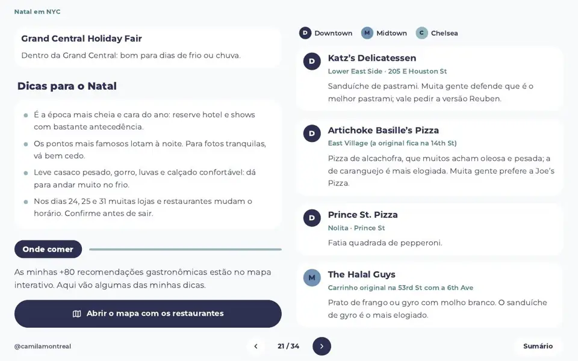
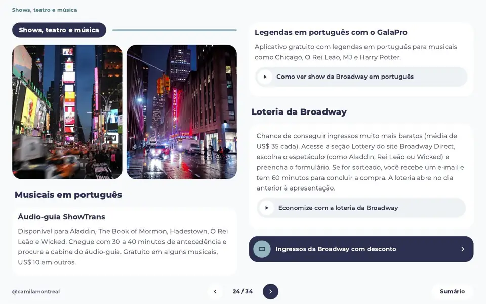
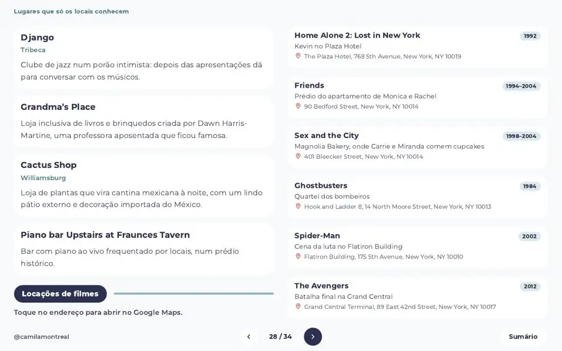
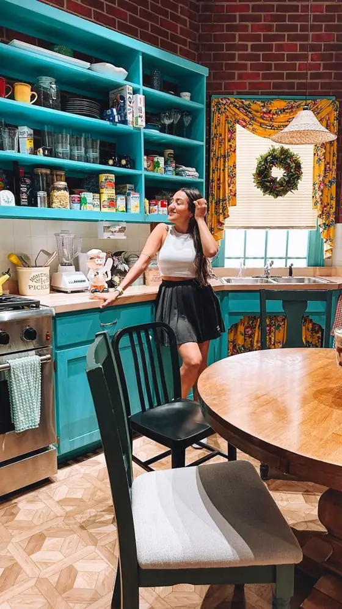

Versão desktop
Para planejar com calma, no computador, com mais tempo: veja os dias lado a lado, abra os links de reserva e monte seu roteiro.
Próxima estaçãoInício da linha
Eu queropara você aproveitar mais e planejar menos.
O guia pessoal da Camila Montreal: roteiro por região, mapa interativo e as dicas de quem já foi inúmeras vezes.
É o meu guia pessoal de Nova York, feito para quem quer planejar por conta própria sem passar semanas pesquisando.
Tudo que eu faria e recomendaria a uma amiga: bairros, horários, segredos que poucos turistas conhecem, onde comer, como economizar e links de reserva. Você usa no computador para planejar e no celular durante a viagem.
Aviso da estação
Visite o Summit One Vanderbilt no primeiro horário para evitar multidões.
O guia traz um roteiro base e opções para quem fica mais. Escolha um dia e espie o que tem dentro.

Bairros e regiões que o guia cobre:





Você recebe os dois arquivos. O conteúdo é o mesmo, só muda o formato para cada momento da viagem.
Para planejar com calma, no computador, com mais tempo: veja os dias lado a lado, abra os links de reserva e monte seu roteiro.
Para consultar durante a viagem: coluna única, fácil de rolar com uma mão e pensada para a tela pequena enquanto você anda pela cidade.
Baixe o PDF e abra sem internet. Links, vídeos e o mapa interativo precisam de conexão.
Os dois arquivos chegam juntos, no mesmo link, e você escolhe qual abrir em cada momento.
Toque em cada caixinha para ver o que tem dentro.
Receba todas as atualizações gratuitamente!
Sempre que eu conhecer um lugar novo, você vai saber.
Os lugares que eu mostro no guia, do jeito que eu vivi cada um.



Seis atrasos que eu já enfrentei, para você não pegar.
Eu comprei o bilhete errado, perdi o certo e gastei US$ 200 na primeira hora. O guia manda pesquisar o bilhete exato antes de embarcar.
Sem desembarque na ilha, o Staten Island Ferry é gratuito. O guia diz como chegar e de que lado sentar.
A loteria dá chance de ingressos bem mais baratos, e há áudio-guia e legendas em português para vários musicais.
Antes de pedir, procure promoções na porta. Eu paguei US$ 2 em vez de 4 só perguntando.
Preço de cada pista, e qual delas tem entrada grátis: no Bryant Park você paga só o aluguel dos patins.
É quase impossível achar banheiro público em Nova York. O mapa interativo tem uma aba só com banheiros gratuitos.
Arraste a hora do dia. À esquerda, quem vai sem plano. À direita, quem leva o guia, que marca o melhor horário de cada parada.
Ilustração para brincar, não é dado real de lotação. No guia, as dicas de horário são reais, por exemplo: Summit One Vanderbilt no primeiro horário e Museu de História Natural pela entrada Gilder Center às 10h.
Você continua usando as redes. Só não precisa montar tudo sozinha(o).

Cami tem 30 anos, já conheceu 27 países e mora no Canadá há quase 3 anos. Já perdeu a conta de quantas vezes foi a Nova York.
Seu amor por novas culturas e sabores faz a Cami explorar ao máximo os destinos e planejar os mínimos detalhes das viagens. É formada em Marketing, pós-graduada em Inteligência Competitiva e Inovação em Marketing, e soma mais de 600 mil seguidores nas redes.
!Cuidado, as portas vão fechar. Stand clear of the closing doors.
Você recebe o link com a versão desktop e a versão celular do PDF, o mapa interativo, atualizações gratuitas e reembolso em até 7 dias.
Você está vendo o site em português: preço em reais e checkout em português. Para ver em inglês, use o botão EN lá em cima.
Passar o cartãoAssim que o pagamento for confirmado, você recebe um e-mail com o link do PDF interativo, com versão para desktop e versão para celular.
O conteúdo é o mesmo. A versão desktop é para planejar com calma no computador; a versão celular tem coluna única para consultar durante a viagem. Você recebe as duas.
Não. O guia tem um roteiro base de 4 dias, mas cada dia é independente e organizado por região. Se você fica menos, escolha os dias que combinam; se fica mais, há ideias extras como bate-voltas e passeios diferentes.
Sim! O guia foi feito todo em português e tem várias dicas para quem nunca foi ao destino, inclusive dicas culturais, além de dicas para ver musicais em português. Também existe a versão em inglês.
Não! Tanto o roteiro quanto o mapa podem ser acessados offline. Menos uma coisa para você se preocupar durante a viagem.
É um menu organizado por região, não uma obrigação. Há paradas marcadas como opcionais e muitas são só uma passada ou uma foto. Você escolhe o ritmo.
Preços e horários em Nova York mudam. O guia recebe atualizações gratuitas pelo mesmo link, e eu recomendo conferir o site oficial antes de comprar ingressos.
São links de reserva de passeios, ingressos e serviços com o meu cupom. Alguns parceiros me pagam uma comissão quando você reserva pelo link, sem custo extra para você.
Você pode pedir o reembolso em até 7 dias. Escreva para o contato que está no rodapé da página.
Sim! Você pode conferir todos os meus roteiros nas minhas redes.
Você já escolheu o destino. Falta só decidir como quer chegar lá: com 30 abas abertas ou com um guia na mão.
Eu quero